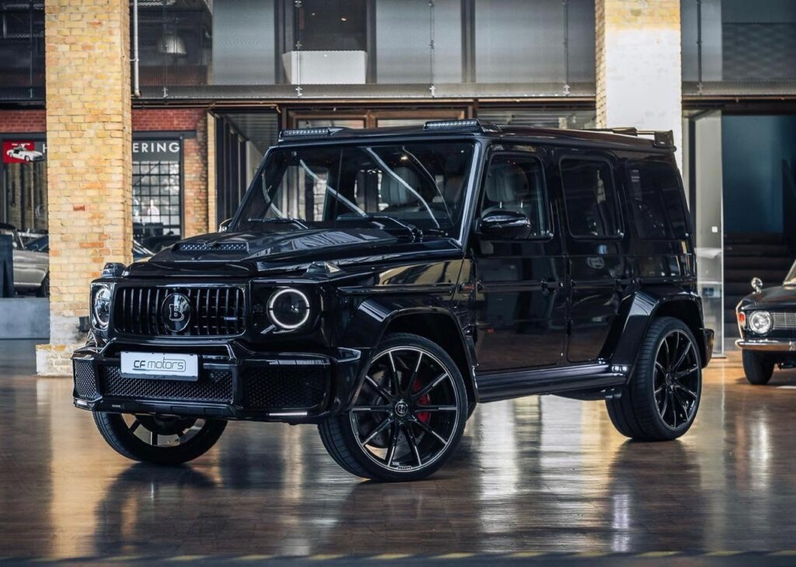

Tesla S

Tesla S modeli — bu Tesla, Inc kompaniyasining flagman modeli sifatida xizmat qiluvchi akkumulyatorli yuk
koʻtaruvchi avtomobil. Model S ikki dvigatelli, toʻliq gʻildirakli haydovchi sxemasiga ega, garchi Model S
ning oldingi versiyalarida orqa dvigatelli va orqa gʻildirakli haydovchi sxemali edi.
Model S ni ishlab chiqish „WhiteStar“ kod nomi ostida 2007-yildan oldin boshlangan. Model S rasman 2008-yil
30-iyunda eʼlon qilingan va prototipi 2009-yil mart oyida taqdim etilgan. Model S 2012-yil 22-iyun kuni
debyut qildi 2014-yil 9-oktabrda 60D nomi bilan tanilgan, qayta koʻrib chiqilgan, ikki dvigatelli, toʻliq
gʻildirakli versiya debyut qilingan. 60Ddan keyin ikki dvigatelli va toʻliq gʻildirakli haydovchini
standartga aylantirgan 70D, keyin esa 85D, P85D va P90D modellari debyut qilindi. 2017-yil fevral oyida
Tesla Model S P100D bilan yangilandi, u qayta koʻrib chiqilgan dvigatelni oʻz ichiga oldi va EPA hisoblangan
masofasi 300 milya (483 km)dan oshgan birinchi elektr avtomobil boʻldi. Tesla Model S’ning „Palladiy“ kod
nomi bilan yangilanishi 2021-yil iyun oyida taqdim etilgan boʻlib, u yangi „Plaid“ unumdorlik modelini,
shuningdek, qayta koʻrib chiqilgan interyeri, quvvati va suspenziyasiga ega.
Model S har qanday mamlakatda oylik yangi avtomobillar sotuvi reytingida birinchi oʻrinni egallagan birinchi
elektromobil boʻldi va Norvegiyada ikki marta, 2013-yil sentabr va dekabr oylarida va 2015-yil dekabrda
Daniyada yetakchilik qildi. 2018-yil sentabr oyida savdolar 250 000 donadan oshdi. Model S 2015 va
2016-yillarda dunyo boʻylab eng koʻp sotilgan elektr avtomobili boʻldi, garchi keyinchalik Model 3 undan
oʻzib ketdi. Chiqarilganidan soʻng, Model S ijobiy sharhlar oldi, uning tezlashishi va diapazoni maqtovga
sazovor boʻldi, garchi dastlabki modellar yuqori narx va tormozlash muammolari uchun tanqidga uchradi.
Bugatti Chiron

Bugatti kompaniyasi Chiron giperkarining soatiga 400 km gacha tezlashtirilgani va to‘liq to‘xtatilishi
tasvirlangan videoni namoyish qildi. Bu rekord natija qayd qilingan ushbu rolikda mashina soatiga 450 km
gacha tezlashtirilmoqchiligi e'lon qilingan. Ushbu video Bugatti’ning YouTube-kanalida joylashtirilgan.
Bugatti Chiron’ning rekord natijasi haqida sentabr o‘rtalarida ma'lum bo‘ldi. Model 400 km/soat tezlikka
32,6 soniyada 2,6 km lik masofada erishdi. Shundan keyin uni to‘liq to‘xtatish uchun 9,3 soniya vaqt va 491
metr masofa talab etildi. Shu tariqa “Shiron”ga bu rekordni qayd qilish uchun umumiy hisobda 41,96 soniya va
3112 metr kerak bo‘ldi. Mashinani esa “Formula-1” poygasining sobiq ishtirokchisi Xuan Pablo Montoyya
boshqardi.
“Shiron” 8 litrli, 16 silindrli, 4 turbinali dvigatel bilan jihozlanadi. Motorning quvvati 1500 ot kuchini
tashkil qiladi. Mashina joyidan 100 km/soat tezlikka 2,5 soniyada erishadi. Mashinaning e'lon qilingan
maksimal tezligi soatiga 420 km ni tashkil qiladi.
Brabus 700

Avtomobilni yaratish tarixi, umuman olganda, qattiq SUV uchun juda keng tarqalgan - harbiylar mashinaga muhtoj
edi. Ammo yevropalik harbiylardan farqli o‘laroq, Eron shohi Muhammad Rizo Pahlaviy o‘z armiyasiga o‘ziga xos va
bundan tashqari, ayniqsa ishonchli mashina tilagan. Bu turli xil to'liq g'ildirakli transport vositalarini
yetkazib beruvchi Mercedes va Puch kompaniyalari 1972 yildan beri Germaniya armiyasining yo'ltanlamas avtomobili
uchun tanlovga tayyorlayotgan bir qator loyihalarni ishga tushirishga imkon berdi.
Ushbu raqobat juda yutqazdi - Volkswagen Iltis modeli bilan g'alaba qozondi. Kelajakdagi Gelendvagen birinchi
navbatda o'tmadi, chunki u qimmatroq edi va bundan tashqari, hali ommaviy ishlab chiqarilmagan. Ammo dizaynning
salohiyati ancha yuqori bo'lib chiqdi va mashina universal bo'lishi uchun yaratilgan - u nafaqat harbiy
mijozlar, balki tinch aholi uchun ham mos edi.